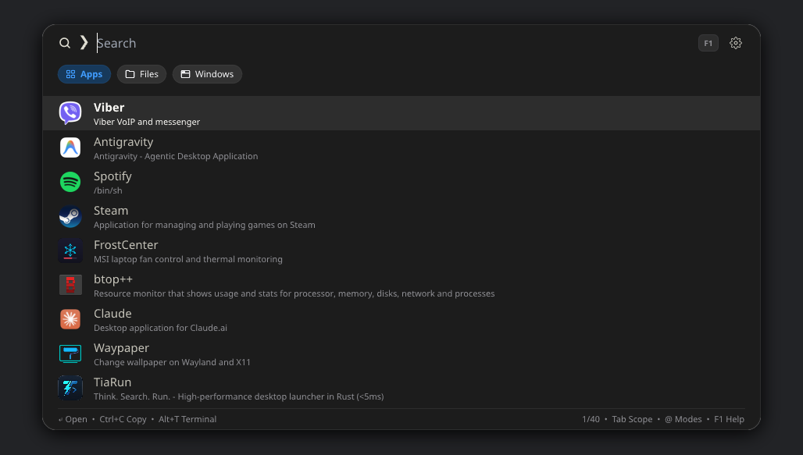

Windows
Windows Installer
Run the installer and launch TiaRun from the Start Menu.
Portable Archive
Extract and run tiarun.exe.
Search files with accent-insensitive Vietnamese support, preview contents, and calculate right inside the TiaRun command bar.


firefoxType an application name and press Enter to launch.

@f Cargo.tomlSearch files by name and preview them inline. For Vietnamese filenames, type @f ke hoach to match “Kế hoạch”. Press → to enter subfolders.

@tSearch keywords inside plain text, source code, and Word .docx documents in your configured folders.

25 km to milesEvaluate math expressions or convert units directly in the command bar. Press Enter to copy the result.

@wFind and focus open windows. On Linux, support depends on the desktop environment.

@cSearch previously copied text snippets and press Enter to copy them again.

@sysRun actions like lock screen, sleep, or restart. Available commands vary by operating system.

Ctrl + ,Customize theme, transparency, and search folders in Settings.
Launch TiaRun after installation, then use the shortcut to show or hide the command bar.
Ctrl + Alt + Space
Use ↑ ↓ to navigate, Enter to execute, and Esc to dismiss.
Press Tab or Shift + Tab to switch search modes.
firefox@f ke hoach@t contract500 * 12@w @c @sysChoose an installer or portable archive for x86-64 computers.
Run the installer and launch TiaRun from the Start Menu.
Extract and run tiarun.exe.
Open the .deb file with your software installer.
Extract and run the tiarun binary inside.
TiaRun searches installed applications and local files on your machine. When you pick a web search result, the query opens in your browser. Currency conversion can connect online to update exchange rates.
Open your desktop environment's keyboard shortcut settings and bind Ctrl + Alt + Space to the tiarun command. If using the extracted archive, enter the full path to the executable.
TiaRun creates the window once and keeps a background daemon running. Subsequent invocations send a signal to that process to show or hide the window.
Press Ctrl + , to open Settings. You can also configure folders, search depth, and exclusion rules in the TOML configuration file.